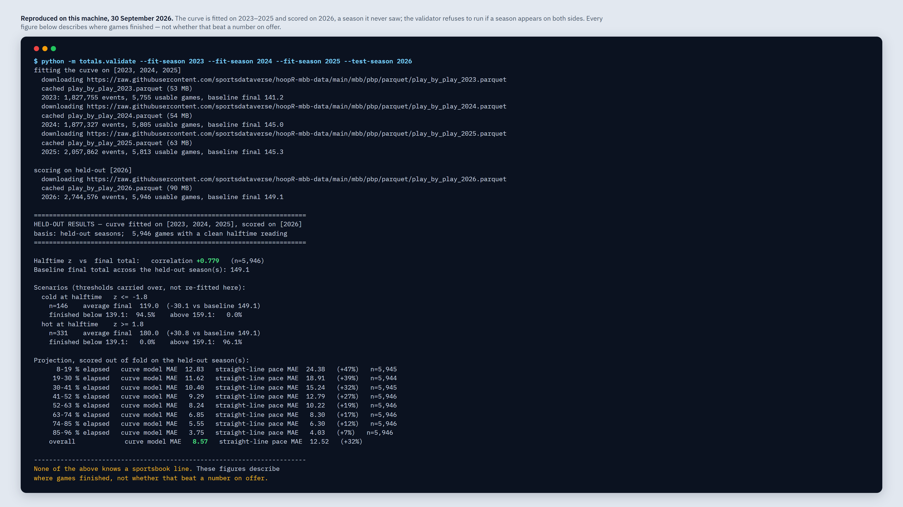
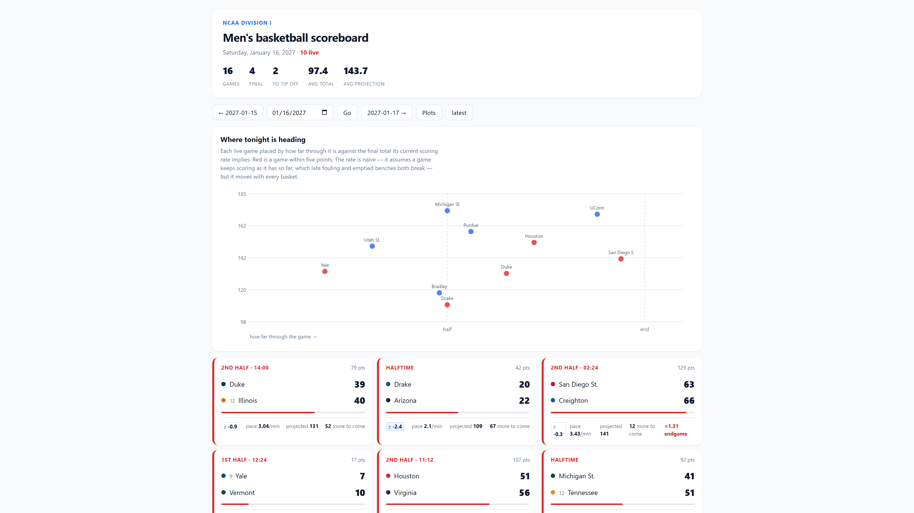
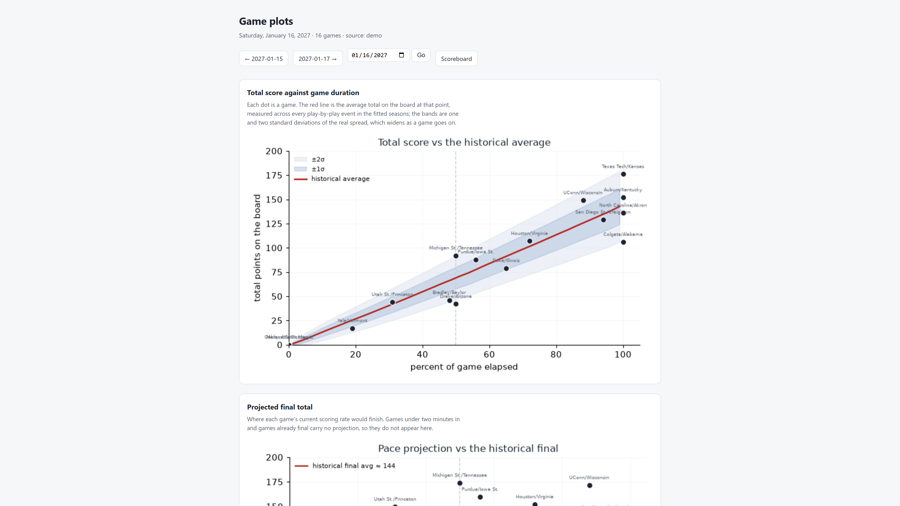

How far a game's combined score sits from where it normally sits at that point — fitted on 23,319 games, validated on a season it never saw. It has no knowledge of any line, price or odds.
The validator output is real and reproducible from the product. The two page shots use generated demo data — school names are real Division I institutions, but every score was produced by the generator and matches no actual game. The application reports its feed source as demo in frame.
What it looks like

The numbers, reproduced.totals.validate fits the curve on 2023–2025 and scores it on 2026 — a season it never saw — and refuses to run if a season appears on both sides. Halftime reading against final total: +0.779 correlation over 5,946 games. Projection error 8.57 against straight-line pace at 12.52. Every figure describes where games finished; this software knows no line and compares against none.

Every game plotted against the curve. How far the combined score sits from where the score normally sits at that point in a game, beside a naive pace projection and how much of the total is still unresolved. Generated demo data — no real games.

A day of games against the historical band. The red line is the average total on the board at each point, measured across every play-by-play event in the fitted seasons; the bands are one and two standard deviations of the real spread, which widens as a game goes on. Generated demo data — no real games.
How it was checked
56 tests pass from the shipped zip. A Windows defect was found and fixed first: %-d is a glibc extension, so on the Windows C runtime both pages returned 500.
The validation was re-run end to end against the four public hoopR parquet releases: 23,319 usable games and 8,507,520 events, both cross-checked against the totals recorded in the shipped curve file. They match exactly.
Contamination is documented rather than hidden: fitting on games the model had already seen gives +0.541; the honest held-out figure is +0.464, and the product ships the tool that shows the difference.
A second held-out season repeats the result: +0.770, projection error 8.22 against 12.30.
Not included
It has no concept of a price. Every figure is a historical distribution — not a win rate, not an edge, not a yield, not a return, and not a claim about any wager.
The negative-results record is 14 entries, and only 5 are re-runnable from the product. The other 9 came from a private table that is not shipped. An earlier draft said “twenty” and “every failure re-runnable”; both were wrong and are corrected here.
Scoring drifts between seasons — the baseline final rose from 141.2 to 149.1 across the four fitted — so refitting is recurring work, not a one-off.
Two web pages only. Scenario samples are in the low hundreds and the validator flags n < 60. Fitting needs network access, about 260 MB, and pandas/NumPy/pyarrow/matplotlib. Live polling depends on a third-party mirror. Overtime is excluded from the curve. No auth, no support.
The licence is an unreviewed template.
Get it
NCAA Totals Model — $9
Complete Python source, 3,119 lines. Runs offline on generated demo data with no API key and no account. Division I runs November to early April.